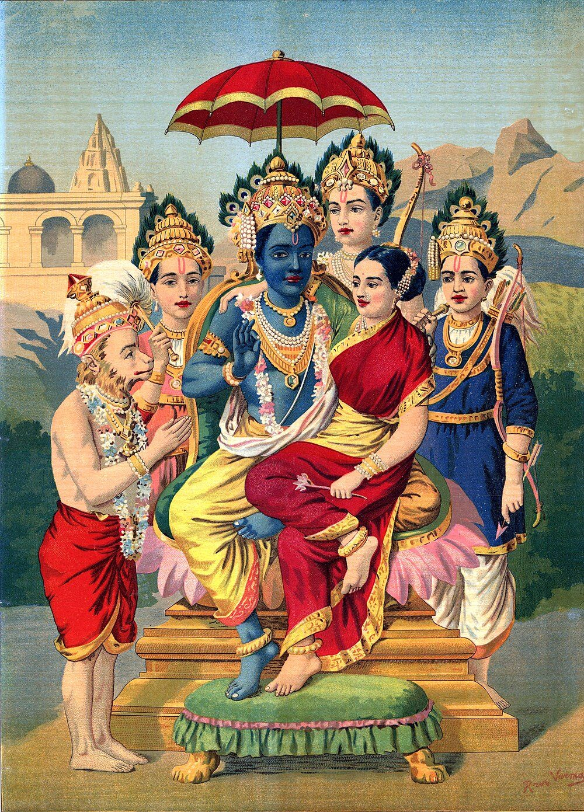

Chapter 10: Women in the Epics — Role, Agency, and Significance¶
yatra nāryas tu pūjyante ramante tatra devatāḥ /
yatraitās tu na pūjyante sarvās tatrāphalāḥ kriyāḥ //
— Manusmṛti 3.56
The women of the Sanskrit epics are not background figures. Sītā, Draupadī, Kuntī, Gāndhārī, Mandodarī, Sāvitrī, Damayantī, Tārā, Ambā and many others speak, argue, choose and suffer, and their choices drive the narratives at decisive points. Yet they act within a patriarchal social order that the epics, like the Dharmaśāstras of the same period, largely take for granted, and that frequently subjects them to humiliation, abandonment and tests of chastity. Both facts need to be held together. This chapter presents the major women of the epics as the tradition has honoured them, and also the feminist and other critical readings that have questioned the ideals they were made to embody (Sutherland 1989; Hess 1999; Chakravarti 2003).
The Manusmṛti verse quoted above — “where women are honoured, there the gods rejoice; where they are not honoured, all rites are fruitless” — is often cited to show the high status of women in the tradition. The same text also declares that “her father protects her in childhood, her husband in youth, her sons in old age; a woman is not fit for independence” (na strī svātantryam arhati, 9.3). The epics’ portrayal of women moves between these poles.
10.1 Sītā¶
Sītā, the daughter of King Janaka, found in a furrow of the earth (hence ayonijā, “not born from a womb”), is the central female figure of the Rāmāyaṇa. For the tradition she is the model wife; for modern readers she is also an independent moral agent whose speech and endurance are integral to the epic, and whose treatment by Rāma is its most contested theme.
10.1.1 Key Dimensions of Sītā’s Character¶
-
Intelligence and eloquence: Sītā is articulate and versed in dharma. In the Ayodhyā Kāṇḍa she insists on sharing the exile, and in the Araṇya Kāṇḍa she warns Rāma against violence towards those who have not wronged him.
-
Courage in captivity: In the Aśoka grove she withstands Rāvaṇa’s threats and blandishments, speaking to him only after placing a blade of grass between them, and refuses Hanumān’s offer to carry her away, saying that Rāma himself must rescue her.
-
The ordeal by fire: When Rāma publicly repudiates her, Sītā answers him with reproach and enters the fire; the episode and its readings are discussed in Section 3.6.3.
-
The final refusal: In the Uttara Kāṇḍa, summoned to swear her purity again before the assembly, Sītā instead calls on the Earth, her mother, to receive her — a refusal of a second test that many readers regard as the most powerful act in the epic.
10.1.2 Sītā’s Argument for the Exile¶
Sītā’s decision to follow Rāma into exile is presented not merely as wifely devotion but as a reasoned claim. When Rāma tells her to stay behind, she argues with him at length, and when he still refuses, she taunts him: did her father, she asks, take him for a man when he was only a woman in a man’s form?
Sītā’s Arguments for Accompanying Rāma (Ayodhyā Kāṇḍa)
-
A wife shares her husband’s fortune, good or bad
-
The forest holds no terrors for one who walks with Rāma
-
Separation from her husband would be worse than death
-
Brahmins had foretold that she would one day live in the forest
Sītā does not merely ask permission; she prevails through argument and conviction — though the content of her argument is the ideal of the devoted wife.
10.2 Draupadī — The Fire-Born Queen¶
Draupadī (also called Kṛṣṇā, Pāñcālī and Yājñasenī) is the most complex and outspoken woman of the Mahābhārata. Born from Drupada’s sacrificial fire and married to all five Pāṇḍavas, she is a catalyst of the epic’s central conflict and a relentless voice for justice (Hiltebeitel 1988).
10.2.1 Draupadī’s Key Roles¶
-
The cause of the war: Her humiliation in the Kaurava assembly becomes the irrevocable cause of the war. Bhīma vows to drink Duśśāsana’s blood and to break Duryodhana’s thigh, and both vows are fulfilled.
-
The questioner of dharma: Her question in the Sabhā Parva — whether Yudhiṣṭhira, having first lost himself, still had the right to stake her — is a moral and legal question that goes to the heart of the epic. Bhīṣma replies only that dharma is subtle; the young Kaurava Vikarṇa and Vidura support her, but the assembly gives no clear answer, and Dhṛtarāṣṭra finally grants her boons out of fear.
-
The unbound hair: Dragged into the assembly by her hair, Draupadī becomes in later tradition the woman who keeps her hair unbound until it can be washed in Duśśāsana’s blood — a motif developed especially in Bhaṭṭa Nārāyaṇa’s play Veṇīsaṃhāra and in regional retellings.
-
Political judgment: In the forest she challenges Yudhiṣṭhira’s passivity, arguing for vengeance and questioning divine justice (see below).
-
Devotion to Kṛṣṇa: Later devotional tradition celebrates her surrender to Kṛṣṇa during the attempted disrobing as supreme bhakti; on the absence of her prayer from the critical text, see Section 4.8.
In parts of South India Draupadī is worshipped as a goddess, and the Draupadī cult of Tamil Nadu, with its fire-walking festivals and dramatic performances of the epic, has been studied in detail by Alf Hiltebeitel (Hiltebeitel 1988).
10.3 Kuntī¶
Kuntī (also called Pṛthā) is the mother of the three elder Pāṇḍavas and the secret mother of Karṇa, and her secret shapes the whole epic.
10.3.1 Key Aspects of Kuntī’s Character¶
-
Unmarried motherhood: Using a mantra given her by the sage Durvāsas, she summons the Sun god before her marriage and bears Karṇa, whom she sets adrift in a basket.
-
Resilience: She raises her three sons and Mādrī’s twins through exile and danger.
-
The shared marriage: When her sons return with Draupadī and announce the “alms” they have won, Kuntī, without looking, tells them to share it equally — words that cannot be revoked and lead to the polyandrous marriage.
-
Counsel to fight: Before the war Kuntī sends Yudhiṣṭhira, through Kṛṣṇa, the story of Vidulā, a queen who goaded her defeated son back into battle — a fierce call to Kṣatriya duty.
-
The meeting with Karṇa: Kuntī reveals to Karṇa that she is his mother, seeking to turn him from the Kaurava side; he refuses, but promises to spare all her sons except Arjuna.
-
Her final choice: After the war she chooses to accompany Dhṛtarāṣṭra and Gāndhārī to the forest, where she dies with them in a forest fire.
10.4 Gāndhārī — The Blindfolded Queen¶
Gāndhārī, the princess of Gāndhāra who binds her eyes on learning that her husband Dhṛtarāṣṭra is blind, is a figure of great austerity (tapas) and tragic dimension.
-
Her self-imposed blindness is presented as supreme wifely devotion; modern readers have also seen it as a symbol of the moral blindness of the Kaurava household, and even as a protest.
-
She repeatedly warns Duryodhana against his course and urges him to make peace; when he asked for her blessing in the war, it was famously conditional: “where dharma is, there is victory” (yato dharmas tato jayaḥ, 11.17.6).
-
In the Strī Parva she reproaches Kṛṣṇa for allowing the slaughter when he could have prevented it, and curses him: his own clan will destroy itself, as hers has. Kṛṣṇa accepts the curse calmly, and it is fulfilled in the Mausala Parva; the epic thus concedes to a grieving mother the moral authority to curse a god.
-
Her lament over the bodies of her sons on the battlefield is the centre of the Strī Parva. (The popular story that she made Duryodhana’s body invulnerable by unbinding her eyes to look at him belongs to later retellings.)
10.5 Mandodarī¶
Mandodarī, the chief queen of Rāvaṇa, repeatedly urges her husband to return Sītā and avoid destruction. Her lament over his body in the Yuddha Kāṇḍa, in which (in the vulgate) she recognises Rāma as more than human and blames Rāvaṇa’s lust for his ruin, is admired by the tradition as an example of pathos (karuṇa); for the tradition she shows that even in the household of adharma the voice of dharma is heard.
10.6 Sāvitrī and Damayantī — Heroines of the Upākhyānas¶
10.6.1 Sāvitrī — She Who Won Back Her Husband from Death¶
The story of Sāvitrī is told to Yudhiṣṭhira by Mārkaṇḍeya in the Āraṇyaka Parva (the Pativratāmāhātmya). Sāvitrī chooses Satyavat as her husband despite Nārada’s warning that he will die within a year. When Yama, the god of death, comes for Satyavat, she follows him, and through a series of eloquent speeches on dharma wins boons from him, until he restores her husband’s life (Table 10.1).
| Boon | Request | Effect |
|---|---|---|
| First | Restoration of her blind father-in-law Dyumatsena’s sight | She asks for another, not for herself |
| Second | Restoration of Dyumatsena’s lost kingdom | Yama’s respect grows |
| Third | A hundred sons for her own father | Piety toward her natal family |
| Fourth | A hundred sons for herself by Satyavat | The decisive move: the boon implies that Satyavat must live |
| Fifth | Satyavat’s life itself | Yama, praising her, releases him |
Sāvitrī’s victory comes through speech and persistence rather than force, and she became the model wife invoked in the women’s vow of Vaṭa Sāvitrī, observed for a husband’s long life.
10.6.2 Damayantī — Intelligence and Devotion¶
Damayantī, in the story of Nala and Damayantī in the Āraṇyaka Parva, recognises the true Nala at her svayaṃvara among four gods who have taken his form and chooses him over them. When Nala, possessed by Kali, abandons her in the forest, she survives by her own courage, and it is she who finally contrives their reunion by setting a second svayaṃvara as a trap for her disguised husband.
10.7 Other Women of the Epics¶
Beside the great heroines stand women whose stories are shorter but often more revealing of the social world the epics take for granted. Several of them show, more plainly than Sītā or Draupadī, how women could be given, exchanged and used to secure a lineage (Brodbeck 2009; Brodbeck and Black 2007).
Satyavatī is the daughter of a fisher chief (dāśa). Before her marriage she bears the sage Parāśara a son, Vyāsa, on an island in the Yamunā. King Śāntanu wishes to marry her, and her father agrees only if her sons inherit the throne, the condition that produces Bhīṣma’s vow (Table 10.2). She is not only her father’s instrument. When both her sons die without heirs, it is Satyavatī who directs the dynasty’s policy: she first asks Bhīṣma to beget sons on her widowed daughters-in-law, and when he refuses she summons her first-born, Vyāsa, whose niyoga produces Dhṛtarāṣṭra, Pāṇḍu and Vidura (Figure 4.1). After Pāṇḍu’s death she withdraws to the forest with Ambikā and Ambālikā, foreseeing the evil to come. The Kuru line on which the whole epic turns is thus continued through a woman of low birth and a son born before her marriage.
The most striking case in the epic of a woman exchanged among men is that of Mādhavī, whose story Nārada tells Duryodhana in the Udyoga Parva as a warning against obstinacy. The young brahmin Gālava insists on paying his teacher Viśvāmitra a fee, and the exasperated teacher demands eight hundred white horses, each with one black ear. Unable to find them, Gālava goes with the bird Garuḍa to King Yayāti, who has no horses to spare and gives him instead his daughter Mādhavī, who has the boon of regaining her virginity after each childbirth. Gālava gives her in turn to three kings — Haryaśva of Ayodhyā, Divodāsa of Kāśī and Uśīnara — each of whom pays two hundred horses for the right to beget one son on her; since no more such horses exist, he hands her to Viśvāmitra himself in place of the last two hundred, and she bears him a fourth son. Returned to her father, Mādhavī is offered a svayaṃvara, and instead chooses the forest, where she lives as an ascetic among the deer. Her sons’ merit later saves Yayāti when he falls from heaven. The story treats her as a means of exchange, and it also lets her make, at the end, the one choice that is hers.
Three women of Arjuna’s and Bhīma’s wanderings come from outside the Aryan kingdoms. Hiḍimbā, a Rākṣasī of the forest, falls in love with Bhīma after he kills her brother; with Kuntī’s consent she lives with him until she bears a son, Ghaṭotkaca, and then returns to the forest, while her son comes back to fight for his father’s family and dies in the war (Section 5.7). She is worshipped as a goddess in the western Himalaya, where the epic’s “demoness” is a local deity. Ulūpī, a Nāga princess, carries Arjuna off to her underwater realm during his exile and bears him Irāvat, the Aravāṉ of the Tamil Draupadī cult (Section 12.5); in the Āśvamedhika Parva she revives Arjuna with a magic jewel after he has been killed in battle by his own son. That son is Babhruvāhana, born to Citrāṅgadā, princess of Maṇipūra, whose father allowed the marriage only on condition that her son continue his own line rather than Arjuna’s — the arrangement of the “appointed daughter” (putrikā) that the lawbooks recognise for a man without sons. Rabindranath Tagore’s play Citrāṅgadā (1892) reimagined her as a princess raised as a warrior.
In the Rāmāyaṇa, Tārā, Vālin’s wife, warns him not to fight Sugrīva again, perceiving that he must have found a powerful ally; ignored, she laments him with great eloquence and later calms an angry Lakṣmaṇa on Sugrīva’s behalf. Kausalyā blesses her son as he leaves for exile even as she grieves, and Sumitrā sends Lakṣmaṇa to serve him. Lakṣmaṇa’s wife Ūrmilā, who stays behind for fourteen years, is barely mentioned by Vālmīki; modern writers took her silence as their subject, among them Tagore in an essay on the women whom poetry has neglected and Maithilīśaraṇ Gupta in his Hindi epic Sāket (1931). Ahalyā, Tārā and Mandodarī, together with Draupadī and Kuntī (Sītā in some versions), make up the five “maidens” (pañcakanyā) of a popular morning prayer — a list that, as many readers have noticed, honours women whose marriages were anything but conventional.
10.8 Women as Catalysts of Narrative Transformation¶
Both epics turn on the actions, choices or sufferings of women. It should be noted, however, that the tradition’s habit of locating the cause of disaster in women — Kaikeyī’s demand, Śūrpaṇakhā’s desire, Sītā’s insistence that Lakṣmaṇa leave her — has itself been criticised as a misogynist pattern (Table 10.2):
| Woman | Action | Narrative Consequence |
|---|---|---|
| Kaikeyī | Demands Rāma’s exile | Sets the entire Rāmāyaṇa in motion |
| Sītā | Sends Lakṣmaṇa after Rāma, accusing him of designs on her | Leaves her alone when Rāvaṇa comes |
| Śūrpaṇakhā | Approaches Rāma in desire | Precipitates the Rākṣasa conflict |
| Draupadī | The vastraharaṇa | Generates the moral imperative for the Mahābhārata war |
| Kuntī | Reveals Karṇa’s identity | Creates the tragic dimension of the great war |
| Satyavatī | Marries Śāntanu on condition that her sons inherit; later summons Vyāsa to continue the line | Bhīṣma’s vow; the birth of Dhṛtarāṣṭra and Pāṇḍu (Section 10.7) |
| Gāndhārī | Curses the Yādavas | Brings about the destruction of Kṛṣṇa’s clan |
| Ambā/Śikhaṇḍinī | Vows revenge on Bhīṣma | Causes Bhīṣma’s fall in battle |
10.9 The Ambā-Śikhaṇḍinī Narrative: Gender, Agency, and Cosmic Justice¶
The story of Ambā is one of the most complex in the Mahābhārata. Ambā, princess of Kāśī, is abducted by Bhīṣma together with her sisters as brides for his half-brother Vicitravīrya. When she reveals that she had chosen King Śālva, Bhīṣma releases her — but Śālva rejects her as another man’s prize, and Bhīṣma cannot marry her because of his vow. Caught between the honour codes of men, Ambā is left with nothing.
Her response is not resignation but fierce determination. After even Paraśurāma fails to defeat Bhīṣma on her behalf, she performs terrible austerities, obtains Śiva’s promise that she will kill Bhīṣma in another life, and is reborn as Śikhaṇḍinī, daughter of Drupada, raised as a son and later changed into a man through an exchange of sex with a Yakṣa. As Śikhaṇḍin, she becomes the instrument of Bhīṣma’s fall. The story raises questions about gender, the persistence of a grievance across births, and the injustice done to women by men’s vows and alliances.
10.10 Beyond the “Ideal Woman” Narrative¶
The women of the epics cannot be reduced to a single “ideal woman” template. Sītā endures with dignity but does not submit, and ends by refusing a second ordeal; Draupadī demands justice and refuses to forgive; Kuntī makes hard decisions with a long view; Gāndhārī’s curse shows the force of a restraint long kept; Sāvitrī defeats Death by argument; Tārā gives political counsel; and Śabarī is remembered for simple devotion. Without Sītā there is no Rāmāyaṇa and without Draupadī no Mahābhārata; their sufferings are also the epics’ sharpest questions about their own moral order.
10.10.1 Women as Intellectual and Spiritual Authorities¶
The epics and Purāṇas include women who hold spiritual knowledge and philosophical authority. In the Śānti Parva, Sulabhā, a wandering female ascetic, engages King Janaka in debate on the nature of the self and of liberation, and exposes the limits of his claim to be liberated while still a king. The Yogavāsiṣṭha presents Cūḍālā as a queen who attains realisation before her husband and then guides him. In the Devī Gītā, the Goddess herself is the supreme teacher.
These figures continue the Upaniṣadic memory of Gārgī and Maitreyī. They are, however, exceptional: the normative texts generally exclude women from Vedic study and from the ascetic path, and Sulabhā herself is attacked by Janaka for her presumption (Table 10.3).
| Woman | Text | Role and Achievement |
|---|---|---|
| Sulabhā | Mahābhārata (Śānti Parva) | Defeated King Janaka in philosophical debate on Ātman |
| Cūḍālā | Yogavāsiṣṭha | Attained Mokṣa before her husband; served as his Guru |
| Devī | Devī Bhāgavata | Teaches Advaita philosophy as the supreme reality |
| Anasūyā | Rāmāyaṇa (Ayodhyā Kāṇḍa) | Ascetic wife of Atri; instructs Sītā on a wife’s duties and gives her ornaments. (The later Purāṇic legend makes her turn the three gods into infants.) |
| Draupadī | Mahābhārata (Āraṇyaka Parva) | Discourses on dharma, fate and divine justice |
| Śabarī | Rāmāyaṇa | Female ascetic; ascends to heaven after receiving Rāma |
Draupadī’s Question: The Philosophical Heart of the Mahābhārata
In the Āraṇyaka Parva, Draupadī asks the question that the Mahābhārata never fully answers: if dharma protects the righteous, why do the virtuous suffer while the wicked prosper? The Creator, she says, plays with creatures as a child plays with toys. Yudhiṣṭhira answers that he does not practise dharma for its rewards, and rebukes her for doubting; but her question — an Indian formulation of the problem of theodicy — is never fully answered within the text, and the war that follows only sharpens it.
10.10.2 Motherhood as a Source of Power¶
The epics also present motherhood as a source of moral authority. Kuntī’s decisions, traced in Section 10.3, shape the whole course of the Mahābhārata. In the Rāmāyaṇa, Kausalyā’s blessing of Rāma before his departure for exile and Kaikeyī’s fateful demands demonstrate how maternal agency drives the epic’s central plot. The Strī Parva of the Mahābhārata gives voice to the collective grief of mothers, wives, and daughters after the war, presenting the female perspective on martial glory and its devastating human cost.
10.10.3 Women and the Tradition of Pātivratya¶
The concept of pātivratya (devotion to one’s husband) is the most debated aspect of the epics’ portrayal of women. The epics themselves present it as a form of spiritual power (tapas) that grants superhuman abilities: Sāvitrī wins her husband back from Death; Damayantī’s fidelity protects her in the wilderness. Critics have pointed out that the same ideal served to make a wife’s whole religious life consist in service to her husband, to justify her abandonment or punishment on suspicion, and, in its most extreme later form, to glorify the self-immolation of widows (satī). See Table 10.4.
| Woman | Trial Endured | Power Demonstrated |
|---|---|---|
| Sāvitrī | Followed Yama to reclaim her husband’s soul | Conquered death through argumentation and devotion |
| Anasūyā | Tested, in later Purāṇic legend, by the three gods | Turns them into infants through her tapas (not in the epics) |
| Damayantī | Abandoned in the forest by Nala | Survived through inner strength; her virtue attracted divine protection |
| Arundhatī | Lifelong devotion through cosmic ages | Became the guiding star; shown to brides as an ideal |
| Sītā | The ordeal by fire | Fire refuses to harm her; the earth finally receives her |
10.11 Feminist and Other Critical Readings¶
Since the late nineteenth century, the women of the epics have been central to Indian debates about the status of women. Reformers and nationalists held up Sītā and Sāvitrī as models of the chaste, self-sacrificing Indian wife; critics have argued that these ideals served to discipline women.
-
Textual scholarship: Sally J. Sutherland (Goldman) contrasted Sītā, who turns her anger inwards and endures, with Draupadī, who expresses it openly and demands vengeance, and argued that Indian culture made the former its preferred model for women (Sutherland 1989).
-
Popular responses: Linda Hess’s study of audiences of the Rāmlīlā and of the Rāmacaritamānas documents the range of Indian responses to Rāma’s treatment of Sītā, from elaborate justification to open rejection (Hess 1999). Madhu Kishwar’s essay “Yes to Sita, No to Ram” found that many women revere Sītā while condemning Rāma’s conduct towards her (Richman 2001).
-
Women’s retellings: Telugu, Bengali and Maithili women’s songs, the sixteenth-century Bengali Rāmāyaṇa of Candrāvatī, and modern works such as Pratibha Ray’s Odia novel Yājñasenī (1984), told from Draupadī’s point of view, and Volga’s Telugu stories Vimukta (The Liberation of Sita), retell the epics from the women’s side (Narayana Rao 1991).
-
Dalit and Adivasi readings: Mahasweta Devi’s Bengali story “Draupadi” (1978), in which a Santal woman named Dopdi, tortured and raped in police custody, refuses to cover herself before the officer — a deliberate inversion of the epic disrobing — connected the epic to the violence suffered by tribal and Dalit women. The mutilation of Śūrpaṇakhā, a forest woman, has likewise been read as an emblem of caste and gender violence.
These readings do not displace the devotional understanding of Sītā, Draupadī and Sāvitrī, which remains central for millions of women; they show how the epics continue to be the ground on which questions of gender are argued (Chakravarti 2003). See Figure 10.1.

.jpg){kind=link}